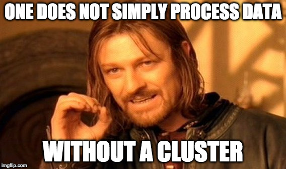

Kubernetes
the ☁️ abstraction layer you didn't know you needed
Overview
- What is Kubernetes?
- Why Kubernetes? (and brief discussion of alternatives)
- Where/How to get started? (maybe demo if there's time?)
- How we're using it on the Foodstuffs Online/TMS projects
- Common pitfalls/mistakes
- Tradeoffs
- Question Time
What the üëâüëå is a Kubernetes?!
Basic problem: you've got a Docker (or rkt) container working, how to get it to Production?
Kubernetes manages deploying, scaling, discovery, availability, rollback etc...
Built by smart Google engineers (based on internal Google system, Borg and the lessons learned from that)
What the üëâüëå is a Kubernetes?!
Abstraction layer for the cloud (same API, regardless of where it's running)
Supports different kinds of workloads (batch processing, service requests)
Lots of community support
Name came from old greek "cyber/kyber", meaning navigable
Why should I give a üí©?
- Fast deploy time (container download/startup)
- Easy scaling with Horizontal Pod Autoscaler
- Handles service registration/service discovery (DNS and overlay network)
- Auto-healing behaviour (terminates and replaces unhealthy Pods)
- Useful abstractions (Deployment, Service, Pod)
- Google's answer to AWS's dominance in ☁️ #CloudWarStrategy
- Nicely abstracts "infrastructure" away from "app" problems
What's the business value?
- Make development go faster (faster deploy = faster feedback)
- ...without taking "shortcuts" (still get HA, scalability, reproducability)
- One development API, same across any ☁️
Why not Docker Swarm?
We used Docker Swarm initially, but back when we tried it, was lacking features, namely:
- service discovery/registration
- whole bunch of other stuff, related to networking and redundancy IIRC
- basically we needed to write a lot of the "glue" to make everything auto-magic on AWS ourselves
- stuff we got for "free" with Kubernetes
How about Mesos?
After a bit of research we came to conclusion that Mesos is way too complicated to build/run
(No, we didn't actually try to get a Mesos cluster up and running)
I've heard good things about ECS!
We didn't really look at it
think it makes you use ECR and has 1-1 docker/EC2 instance ratio
Inherently tied to AWS, we needed cross-☁️ for project IIRC
What about just EC2 ELB/ASG/RDS?
What about just EC2 ELB/ASG/RDS?
Made decision to use Docker early on
Unavoidable differences between Prod environment and laptop (goes away with Docker/containers)
üíá üí© ! Where/How can I get started?
MiniKube - run cluster on your laptop
kube-aws CoreOS AWS auto cluster setup tool
kube-up AWS setup tool
Kubernetes the Hard Way tutorial for learning about the key cluster components
Free Udacity course to learn how to use it
GCE $300 free credit can spin up cluster
Demo Time!! üòÖ ü§û
How we're using it
Local development with Docker Compose
Multiple environments, separated using Kubernetes "namespaces"
Code "progresses" through environments
3 different Kubernetes clusters (Dev, Test, Prod)
How we're using it
2 projects (Online & TMS)
12 environments (sand,tiri,rangitoto,load,tms-dev,tms-int,int,dev,qa,tms-qa,preprod,prod)
Each environment has it's own database/message queues/s3 buckets etc... to manage state
Separation of "cluster infrastructure" and "application infrastructure"...
one uses CloudFormation/Troposphere, other uses Ansible/Kubernetes
Thanks for the sales pitch üê¥üé©, now tell us what really happened?!
well... since you asked...
Common pitfalls/mistakes
Standardise up front on as much as possible (e.g. how to pass configuration to Pods)
standardise on health checks/metrics
Common pitfalls/mistakes
Resource constraints are still a thing (have to know/tell K8s how much CPU/RAM
If you go with microservices architecture, instead of 5 services, you'll be managing 50
API contracts between services (more of a microservices thing)
Debugging is touch and go, useful logging messages are very important
Common pitfalls/mistakes
Figure out how to version everything "together" (microservice anti-pattern? monorepo?)
Work out how to deploy/test branches up front, don't require full env for a small change in one service
it's OK to use "cluster create" scripts to get started. Not OK to use them for anything serious
with self-healing features on, have to keep track of restarts as an indicator of issues
Common pitfalls/mistakes
Don't store state in containers
DO NOT STORE STATE IN CONTAINERS!
have to think about how you're going to do DB/datastore migrations (especially if locks are involved)
give everyone access and a short tutorial on how all the things fit together and how to debug e.g. link
Common pitfalls/mistakes
Overlay network probably doesn't work with UDP/multicast/broadcast, stick to TCP unicast
need a new monitoring/alerting approach to take into account self healing
You will run out of disk. Avoid hosting your own docker registry if possible, if not possible, store images in S3
Need a way to keep container images up to date (heartbleed, java patches etc...)
Tradeoffs
Tradeoffs
- FFS, it's yet another abstraction layer
- violates KISS principle, have to check three systems instead of one when üí© hits the fan
- Do you really need all these features?
- Simpler than Mesos, but still pretty complicated (etcd, overlay network, API server, scheduler, docker, internal DNS etc...)
Questions? Thoughts? Comments?
Made with Reveal.js
Slides can be downloaded here(and PDF here)